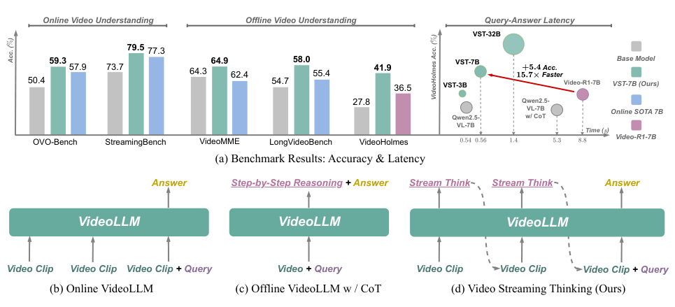
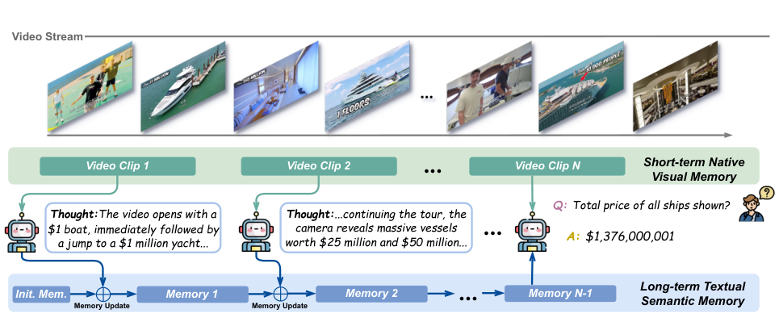
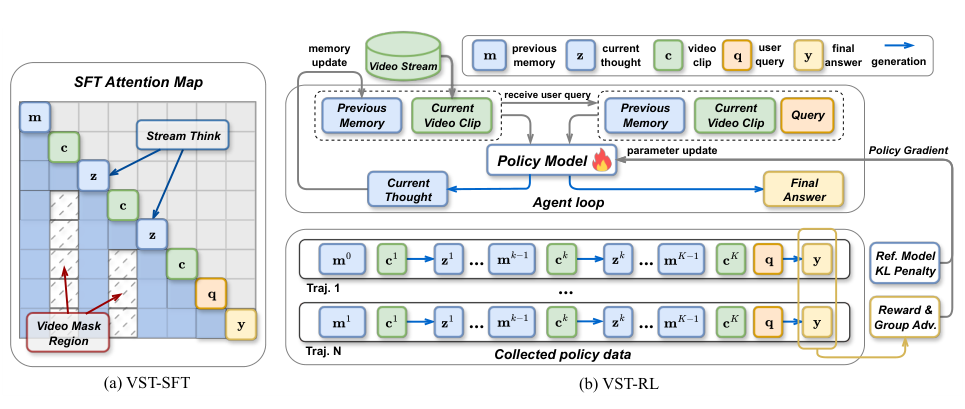
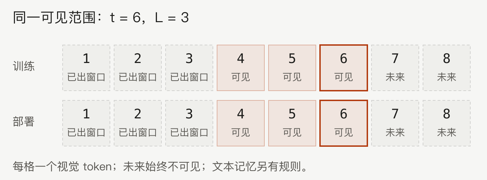

五分钟重建
等用户提问后再做长推理，会增加查询延迟。VST 利用视频片段之间的空档先想、先记，查询到达后使用已完成的记忆作答。
片段到达
短期视觉缓冲只保留最近 L 个视觉 token，未来片段尚不可见。
空档内写想法
把当前画面与已有笔记联系起来，写入固定容量 FIFO 文本记忆。最旧条目会被淘汰。
查询到达后回答
用当前画面与已完成记忆回答。后台思考未完成时，可回退到最近一次完整记忆。
具体例子（教学假设）：一个片段间隔为 16 秒，思考用 7 秒，可以在下一段到达前完成。若改成 20 秒思考，就可能落后，只能利用最近已完成的记忆。这里说明调度，不预测新硬件上的延迟。
边界：低查询延迟不等于没有后台计算。固定记忆也不保证保留全部历史证据。训练可见范围必须与部署对齐，过去已到达与未来尚未到达是两类条件。
换个条件看机制
把视觉部署改为保留所有已到达 token，训练仍只看最近 L 个，会造成哪种不一致？
训练与部署的历史视觉范围不同。训练应同步改为已到达前缀；未来依然不可见。下面的静态图与规则表列出窗口和前缀两种情况。
2026-10-04：讲解与练习待试用，本次未进行理解检验；此处不记录复测通过。
论文图解



一页看懂
02问题
在线视频里「深度推理」和「实时响应」天然冲突：流式感知路线只管记忆不做显式推理，多跳时序问题拉胯；离线 CoT 搬过来则查询后才开始想，延迟 8.8s 直接不可用。
方法
像边看直播边做笔记：推理时机从「查询后」挪到「查询前」，每来一个 clip 就在片段间隙把想法写进 FIFO 文本记忆。提问时读笔记直接答。
结果
StreamingBench 79.5%（超 GPT-4o +6.2%）；QA 延迟 0.56s vs Video-R1 的 8.8s。代价：思考本身烧后台 token，文本记忆有损。
VST 在视频片段之间先思考、写入有限文本记忆，查询到达后用已完成的记忆回答，以降低查询延迟。
关键机制：双记忆系统与推理前置
03联合概率被拆成两段：查询前逐段生成想法（当前片段 + 之前笔记 → 新想法），查询后直接作答（全部笔记 + 当前画面 → 答案，不再长推理）。
万一思考慢于 clip 间隔，回退到最近一次已完成的记忆状态作答：保证「不阻塞响应」，不保证「记忆一定最新」。
好处有二：推理算力分摊到播放期，查询不涨价；逐段想法天然对齐视频的时间因果性。数据是自造的 100K 严格因果 CoT（知识图谱抽三元组、DFS 采多跳证据链、五重过滤），因为现成离线 CoT 是「看完全片」的全局 hindsight 视角写的，thoughts 里偷藏后文信息，直接训会学成作弊。
关键机制：流式掩码与两阶段训练
04流式注意力掩码（全篇最重要的训练技巧）：训练时强制模拟推理时的可见性。每个 token 只能看到最近 L 个视觉 token，但所有历史文本（笔记、记忆）全部可见。
掩码既堵未来（防信息泄露），又堵漂移（训练可见性 = 推理可见性，否则训练看全片、推理看一段，分布不一致导致掉点）。
图解：训练与部署能看哪些视觉 token
未来画面尚未到达，所以训练和部署都不能看它们。窗口部署只保留最近 L 个视觉 token，训练也要采用同样的可见范围。若部署改成保留所有已到达的视觉 token，训练规则也应同步改变；遮住未来的规则仍然保留。


窗口与前缀：四种规则对照
图中示例有 8 个视觉 token，t=6 表示最新已到达的索引，L=3 表示视觉窗口容量。窗口规则可见 max(1, t-L+1) 到 t；前缀规则可见 1 到 t。所有场景都遮住 t 之后的未来。每格一个视觉 token。本图表只说明视觉可见性，文本记忆另有规则；它不预测性能。
| 场景 | 训练规则 | 部署规则 | 解释与边界 |
|---|---|---|---|
| 窗口部署，训练也用窗口 | 最近 L 个已到达 token | 最近 L 个已到达 token | VST 的视觉窗口规则。训练照部署的可见范围来，两边都遮住未来。 |
| 窗口部署，训练只遮未来 | 所有已到达 token | 最近 L 个已到达 token | 教学反例：训练允许回看已出窗口的画面，部署却做不到。当 t 不大于 L 时，当前范围碰巧相同，但规则仍不同。 |
| 保留已到达画面，训练同步调整 | 所有已到达 token | 所有已到达 token | 假设变更：两边都改为已到达前缀，仍不看未来。此处仅比较可见性，未验证这种变更的性能与成本。 |
| 保留已到达画面，训练仍用窗口 | 最近 L 个已到达 token | 所有已到达 token | 教学反例：部署保留了更早的画面，训练却仍遮住它们。当 t 不大于 L 时，当前范围碰巧相同，但规则仍不同。 |
关闭图解后再解释：如果部署保留全部已到达画面，训练应该改哪条规则？为什么未来仍不可见？本演示只作练习，不记录掌握状态或复测通过。
2026-10-04：新增静态图和条件变换练习，待试用；本次没有进行理解检验。2026-08-28 换框架后的反例复验记录保留。
VST-SFT：合成因果 CoT 数据做监督微调，学会「边看边写」协议；配合时序分段绕过上下文长度限制（段间靠记忆递归传递）。VST-RL：GRPO 每问采 8 条轨迹，奖励只看最终答案对不对，但组相对优势赋给轨迹内全部生成 token（含中间 thoughts）：答案对了思考就有功，信用间接传回推理步骤，逼模型写出真有用的思考而非废话。
关键数字
05| 维度 | 结果 | 附注 |
|---|---|---|
| 消融分工 | SFT 补 Backward +9.2 / RL 补 Forward +12.7 | 思考 4 步饱和；3B/7B/32B 全线一致提升 |
| 反直觉发现 | FIFO 更新策略「相对不重要」 | 关键是「有文本记忆」，不是记忆管理多精巧 |
| 代价 | 思考烧额外 token | 作者提 latent reasoning 为未来方向 |
| 失败模式 | 早期证据被 FIFO 淘汰 | 细粒度时间跨度丢失、远距离弱线索关联失败 |
卡壳点
06Q：流式注意力掩码除了防信息泄露，还顺带解决了什么？（Q2 漏掉的半问；08-17/08-19/08-28 三次没答出）
训练-推理架构一致性。训练时不加掩码，模型能 attend 到全片所有视觉 token；推理时滑动窗口只能看最近 L 个。两者分布不一样 → 推理掉点（分布漂移）。掩码让训练时就模拟推理时的滑动窗口（视觉只看最近 L 个，文本全可见），漂移消失。一句话：掩码既堵未来（防泄露），又堵漂移（对齐架构）。
🔧 08-28 三漏后的重讲版（前两次「堵未来+堵漂移」口径记不住，换框架才焊住）：掩码不是安全措施，是彩排规则：训练是彩排，推理是正式演出，彩排的可见性必须照演出来。彩排若看全片，模型养成「记不清就回头看远处画面」的习惯，正式演出（滑动窗口）做不到就懵：分布漂移就是彩排和演出的剧本不一致。锚点：掩码是推理可见性的一面镜子，推理长什么样，训练就照什么样。 由此拆两条规则：
- 规则①「不看未来」：永远需要，与架构无关：未来片段还没到，流式性本身决定的；
- 规则②「视觉只看最近 L 个」：需不需要完全跟着推理架构走：推理若改成全片视觉不丢（无窗口），这条必须删，留着反而自己制造新漂移；推理若改成文本只检索 top-3 相关笔记（RAG 式），文本可见性也得跟着改成 top-3。 两个反例变换复验（08-28）均通过，原则可迁移。
Q：VST 的长期记忆是「前序所有片段」吗？（Q3 表述误差）
不是「所有」：是 FIFO 固定容量，会淘汰最早的 thought 条目，只留最近的若干条。所以是「最近的思想笔记」而非「全部历史」。旧记忆被挤出正是 failure case 里「早期证据过度压缩/丢失」的根源。
Q：FIFO 明知有损为何不换更大/可检索的记忆？（Q3b 深挖）
(1) 固定容量 = token 预算可控 = 实时性（可检索记忆每步要检索整个库，增延迟，破坏「分摊」前提）；(2) 消融显示 FIFO 更新策略本身「相对不重要」，关键在「有文本记忆」而非「记忆管理多精巧」，换复杂管理收益不大。
关联与来源
07RELATED
SOURCE
KFSX84T9 / SW5CUJ2Z